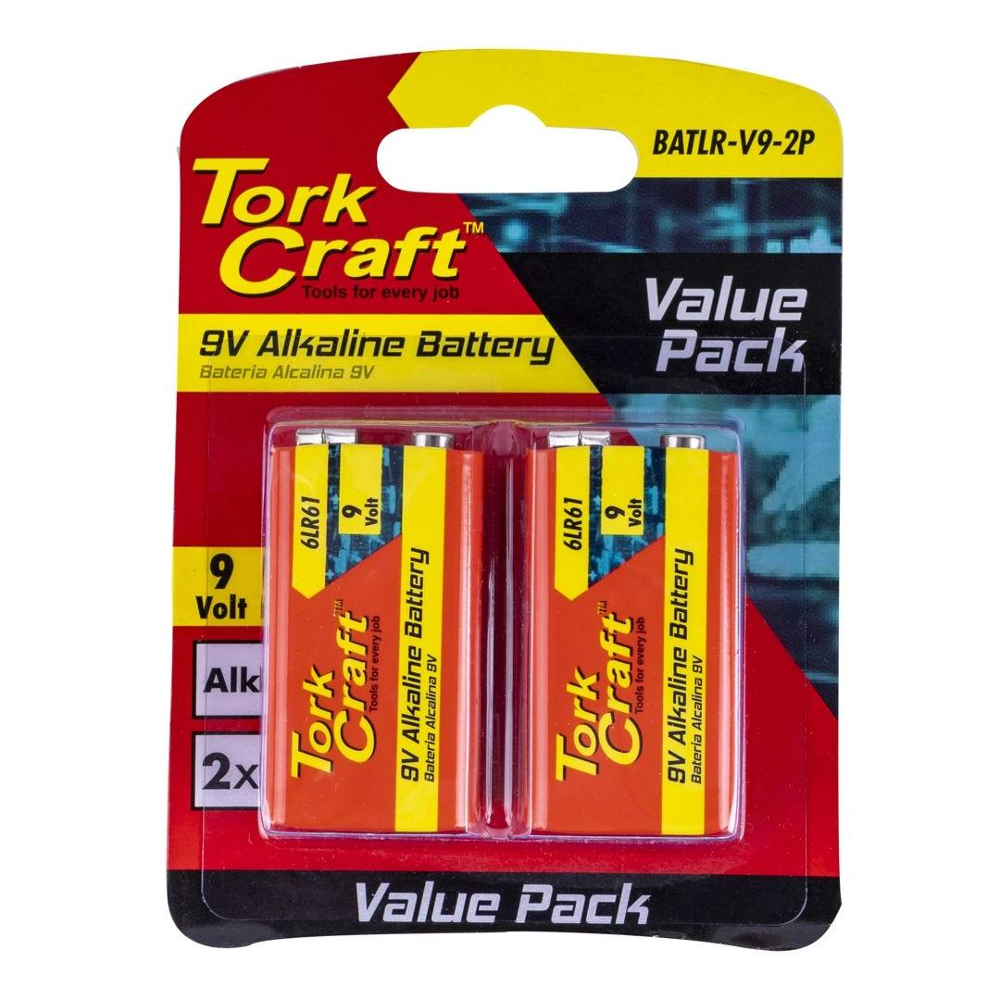

BATLR-9V-2P
151.23

The 9V Alkaline Battery is a reliable and long-lasting power source for a wide range of electronic devices. With its compact size and high energy density, this battery is ideal for powering smoke detectors, remote controls, portable radios, toys, and many other devices.
Designed to deliver consistent and stable power, the 9V Alkaline Battery offers a voltage rating of 9 volts, ensuring optimal performance in various applications. It utilizes alkaline chemistry, which provides a longer shelf life and improved discharge characteristics compared to other battery types.
This 9V battery features a standard rectangular shape with a snap-on connector at the top, making it compatible with devices that require a 9V power source. It is easy to install and replace, ensuring convenient usage.
With a reliable construction, the 9V Alkaline Battery offers excellent resistance to leakage and corrosion, providing a safe and durable power solution. It is manufactured with high quality materials and adheres to strict quality standards to ensure consistent performance and reliability.
Please note that this 9V Alkaline Battery is non-rechargeable and should not be recharged or disposed of in fire. It is recommended to follow local regulations for proper disposal of used batteries.
Choose the 9V Alkaline Battery for your electronic devices and enjoy long-lasting power and reliable performance. Whether it&s for everyday household use or professional applications, this battery is an essential power solution you can trust.